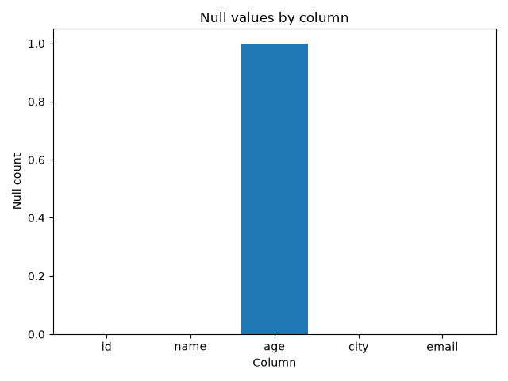

Data Quality Report
Input file: data/sample/customers.csv
Summary
Status
failed
Quality score
50.0%
Checks
1 / 2 passed
Insights
- Dataset contains 5 rows and 5 columns.
- Overall quality score is 50.0%.
- 1 validation check(s) failed.
- Check 'not_null_columns' failed.
- Column 'age' contains 1 null value(s).
AI Summary
Dataset quality summary
The dataset failed 1 validation check(s). Failed checks: not_null_columns. These issues should be reviewed before using the dataset in production analytics.
Recommendations
- Review failed validation checks.
- Investigate affected columns in the source data.
- Consider adding stricter checks to the ingestion pipeline.
Dataset profile
Null counts
| Column |
Null count |
| id |
0 |
| name |
0 |
| age |
1 |
| city |
0 |
| email |
0 |
Null counts chart

Validation results
| Check |
Status |
Details |
| required_columns |
passed ✅
|
-
|
| not_null_columns |
failed ❌
|
{'age': 1}
|